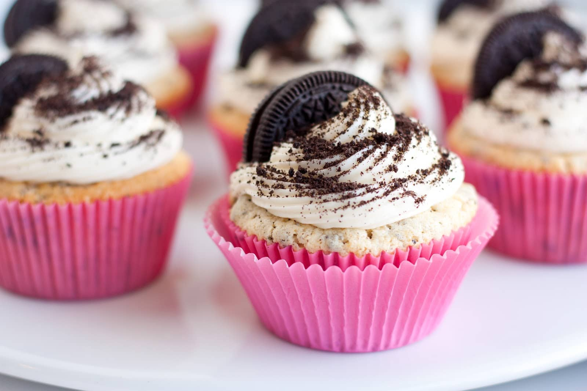

A cupcake (also British English: fairy cake; Hiberno-English: bun; Australian English: fairy cake or patty cake) is a small cake designed to serve one person, which may be baked in a small thin paper or aluminum cup. As with larger cakes, icing and other cake decorations such as fruit and candy may be applied.The earliest extant description of what is now often called a cupcake was in 1796, when a recipe for "a light cake to bake in small cups" was written in American Cookery by Amelia Simmons.[1][2] The earliest extant documentation of the term cupcake itself was in "Seventy-five Receipts for Pastry, Cakes, and Sweetmeats" in 1828 in Eliza Leslie's Receipts cookbook.[3][4]
In the early 19th century, there were two different uses for the term cup cake or cupcake. In previous centuries, before muffin tins were widely available, the cakes were often baked in individual pottery cups, ramekins, or molds and took their name from the cups they were baked in. This is the use of the name that has remained, and the name of "cupcake" is now given to any small, round cake that is about the size of a teacup. While English fairy cakes vary in size more than American cupcake, they are traditionally smaller and are rarely topped with elaborate icing.

The earliest extant description of what is now often called a cupcake was in 1796, when a recipe for "a light cake to bake in small cups" was written in American Cookery by Amelia Simmons.[1][2] The earliest extant documentation of the term cupcake itself was in "Seventy-five Receipts for Pastry, Cakes, and Sweetmeats" in 1828 in Eliza Leslie's Receipts cookbook.[3][4] In the early 19th century, there were two different uses for the term cup cake or cupcake. In previous centuries, before muffin tins were widely available, the cakes were often baked in individual pottery cups, ramekins, or molds and took their name from the cups they were baked in. This is the use of the name that has remained, and the name of "cupcake" is now given to any small, round cake that is about the size of a teacup. While English fairy cakes vary in size more than American cupcake, they are traditionally smaller and are rarely topped with elaborate icing. The other kind of "cup cake" referred to a cake whose ingredients were measured by volume, using a standard-sized cup, instead of being weighed. Recipes whose ingredients were measured using a standard-sized cup could also be baked in cups; however, they were more commonly baked in tins as layers or loaves. In later years, when the use of volume measurements was firmly established in home kitchens, these recipes became known as 1234 cakes or quarter cakes, so called because they are made up of four ingredients: one cup of butter, two cups of sugar, three cups of flour, and four eggs.[5][6] They are plain yellow cakes, somewhat less rich and less expensive than pound cake, due to using about half as much butter and eggs compared to pound cake. The names of these two major classes of cakes were intended to signal the method to the baker; "cup cake" uses a volume measurement, and "pound cake" uses a weight measurement.[5]